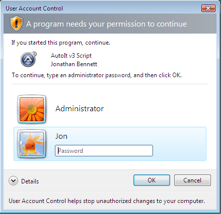
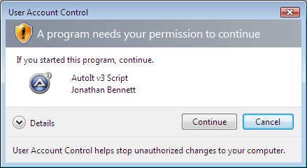
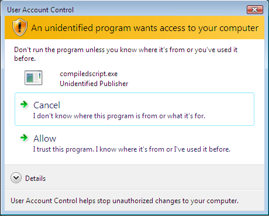

Windows Vista brings new security features to restrict the running of files that require administrative rights. Even administrator users will be prompted every time an executable runs which will perform some administrative operation (such as writing to the registry key HKEY_LOCAL_MACHINE or writing to the C:\Windows directory). This is called User Account Control (UAC).
By default AutoIt scripts run with standard user permissions but AutoIt has been coded to allow the script writer the option to "tag" a script in order to tell AutoIt if it needs to run with full admin rights or not.
To force a script to attempt to run itself with administrative rights add the #requireadmin directive at the top of your script as follows:
; This script requires full Administrative rights
#requireadmin
MsgBox(0, "Info", "This script has admin rights! ")
When the script runs AutoIt will check if it already has full admin rights and if not it will cause the operating system to prompt the user for permission as shown in "UAC Prompts". If permission is not given by the user the script will terminate.
The prompts that Vista will show when launching a program with administrative rights are shown below. The type of prompt displayed will depend on if the user is a "standard user" or an "adminstrator user" (remember even administrators need to get elevated permissions to perform admin operations). Note: The prompts shown are for the digitally signed version of AutoIt - all release versions are signed but beta versions may not be and will give a warning as shown in "Compiled Scripts" below.
Standard User Prompt

A standard user must select a user name and enter a password in order to continue and run the script with elevated rights.
Administrator User Prompt

As the user is already an administrator and just requires elevation the user needs only to click on continue - no password is needed.
Compiled scripts (and possibly beta versions of AutoIt) are not digitally signed and will give a more serious looking warning as shown:

The user must click on Allow to continue (or enter a password if they are a standard user).
If you have your own Authenticode signature you may sign your compiled scripts yourself.
Important: Whether AutoIt or a compiled script is signed or not, you should only run scripts from sources you trust!
Even signed code can be malicious!